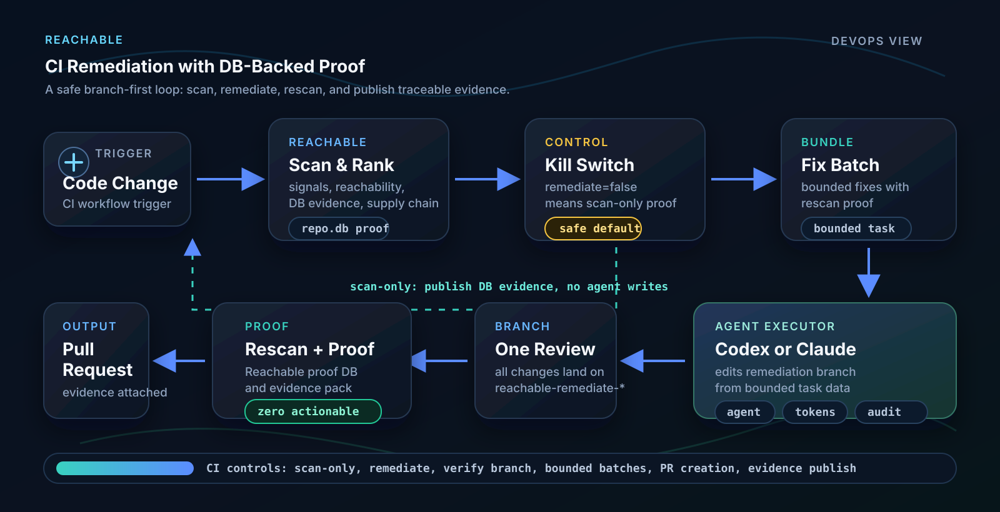

Go Testbed Expected Results
A compact demo for CI scanning and agent-driven remediation. It proves that Reachable can identify the release-blocking queue from database evidence, generate a bounded remediation task, let an agent patch a review branch, and rescan that branch to zero release blockers.
Evidence Links
This page explains the demo contract. The current run status, source code, workflow definition, expected contract, and published proof artifacts are linked here so the evidence can be traced.
Expected raw scanner truth on main.
Release-blocking queue before remediation.
DB evidence rows used in the public proof.
Release blockers after remediation.
What Had To Be Fixed
This is the release decision view. These are the baseline problems that must disappear from the remediation proof scan before the branch is safe to review and merge.
| Fix category | Rows | Exploitability | Why it blocks release | Expected proof after remediation |
|---|---|---|---|---|
| Application attack paths | 9 | Exploitable | Enzo attacker evidence says reachable CWE/AI paths are attackable, including command execution, SSRF/fetch, and externally visible error disclosure. | Those rows are absent from the proof scan. |
| Dependency risk | 1 | Reachable, not attack-proofed | A reachable Go dependency has a fix-available vulnerability. | The fixed dependency version is used and the CVE row is absent. |
| Secret exposure | 1 | Exposure | A synthetic production-shaped token is embedded in application code. | The token row is absent; fixture-only markers remain non-actionable. |
| DLP / PII exposure | 2 | Exposure | Synthetic personal data is logged or sent to an outbound endpoint. | Raw personal data exposure rows are absent. |
| AI boundary and tool-risk rows | 5 | Exploitable / exposure / authority risk | LLM calls, sensitive context, tool instructions, and unguarded user flows cross AI trust boundaries. | The AI rows are absent or covered by the underlying code fix. |
| Total release blockers | 18 | Actionable | Baseline queue that must be fixed before release. | 0 release blockers after remediation. |
Defendable And Nonblocking Evidence
These rows are still part of the baseline evidence, but they are not the final release-blocking queue. They explain why the raw database has more signals than the fix queue.
| Evidence category | Rows | Meaning |
|---|---|---|
| Defended attacker rows | 3 | Reachable paths reviewed by Enzo attacker and classified as defended, not exploitable. |
| Non-production or not-reachable fixture markers | 7 | Synthetic detector coverage rows such as workflow variable names and fixture markers. |
| Total nonblocking evidence | 10 | Tracked for auditability, not counted as release blockers. |
Baseline Signal Breakdown
| Family | Expected signals | Release blockers | Exploitable | Defended / evidence | Expected proof |
|---|---|---|---|---|---|
| CVE | 1 | 1 | 0 | 1 reachable dependency row | Fixed dependency version; no vulnerable dependency row in proof scan. |
| CWE | 12 | 9 | 8 | 3 defended rows | Command execution, SSRF/network fetch, and blocking error disclosure rows disappear after remediation. |
| Secret | 8 | 1 | 0 | 1 exposure row, 7 filtered fixture rows | Synthetic production token is removed; fixture markers remain non-actionable. |
| DLP | 2 | 2 | 0 | 2 exposure rows | Synthetic personal data is no longer logged or sent outbound. |
| AI | 5 | 5 | 1 | 4 reachable AI-boundary rows | LLM/data-boundary and unguarded user-flow rows are removed or covered by the underlying code fix. |
| Total | 28 | 18 | 9 | 19 | The proof scan must show zero release blockers before the branch is ready to review and merge. |
Expected Findings
The table separates the dimensions a release owner needs to understand: raw DB signal count, risk, reachability, and exploitability. A row with more than one DB signal is an explicit group, not a hidden assumption.
| ID | DB signals | Type | Risk | Reachability | Exploitability | Location | Explanation | Remediation |
|---|---|---|---|---|---|---|---|---|
| GO-CVE-01 | 1 | CVE-2022-32149 / golang.org/x/text | High | Reachable | Not attack-proofed | internal/handlers/cve.go; go.mod | A public language parsing route exercises an old dependency with a denial-of-service advisory. | Upgrade golang.org/x/text to a fixed version and keep route-level input validation. |
| GO-CWE-01 | 1 | CWE / command injection | Critical | Reachable | Exploitable | internal/handlers/cwe.go | A request parameter is concatenated into a shell command. A caller could turn a diagnostic endpoint into command execution. | Remove shell string construction. Validate hostnames and pass arguments as an exec argument array or use a network library. |
| GO-CWE-02 | 1 | CWE / user-controlled URL fetch | Critical | Reachable | Exploitable | internal/handlers/suspicious.go | An admin route downloads from a caller-supplied URL. This models unsafe tool staging and SSRF-style fetch behavior. | Restrict sources to a trusted allowlist, require authentication, verify checksums/signatures, and avoid arbitrary outbound fetches. |
| GO-CWE-03 | 1 | CWE / SSRF HTTP client | Medium | Reachable | Exploitable | internal/handlers/suspicious.go | User input reaches an HTTP client, so server-side infrastructure could be asked to call untrusted destinations. | Use URL validation, deny private/internal ranges, enforce trusted schemes/hosts, and add timeouts. |
| GO-CWE-04 | 3 | CWE / error disclosure | Medium | Mixed blocking/nonblocking | Mixed exploitable/defended | internal/handlers/cve.go | Parser errors are returned directly to clients, potentially exposing implementation details; non-attacker-controlled instances are retained as nonblocking evidence. | Return generic client errors and log details internally. |
| GO-CWE-05 | 3 | CWE / error disclosure | Medium | Reachable | Exploitable | internal/handlers/ai.go | JSON decoding errors are returned directly from AI endpoints. | Return generic bad-request text and preserve details only in structured logs. |
| GO-CWE-06 | 3 | CWE / error disclosure | Medium | Mixed blocking/nonblocking | Mixed exploitable/defended | internal/handlers/suspicious.go | Network, file, and copy errors from the tool-fetch path are exposed to callers; one internal-only instance is retained as nonblocking evidence. | Return generic operational errors; keep internal details in logs or audit events. |
| GO-SECRET-01 | 1 | Secret / GitHub token shape | Medium | Reachable | Exposure | internal/handlers/secrets.go | A synthetic GitHub-shaped token is embedded in code and returned by an API. In a real system this would be a credential leak. | Rotate the value, remove it from code, load it from a secret manager, and never return it in responses. |
| GO-SECRET-02 | 1 | Secret / AWS access key shape | Info | Not reachable | Not applicable | internal/handlers/secrets.go | An AWS-shaped synthetic marker is present for detector coverage but is filtered as non-actionable in the latest proof. | Keep only synthetic test markers in fixtures; never put real cloud credentials in source. |
| GO-SECRET-03 | 6 | Secret / workflow token variables | Info | Not reachable / non-production | Not applicable | .github/workflows/reachable-remediate.yml | GITHUB_TOKEN and GH_TOKEN are environment variable names used by GitHub tooling, not real secret values. | No code fix required. They should remain filtered/non-actionable. |
| GO-DLP-01 | 1 | DLP / PII to log | Critical | Reachable | Exposure | internal/handlers/dlp.go | Synthetic SSN and date-of-birth values are written to logs. In production this would create regulated-data exposure. | Mask sensitive values, minimize logging, and add structured audit logging without raw identifiers. |
| GO-DLP-02 | 1 | DLP / PII to outbound HTTP | Critical | Reachable | Exposure | internal/handlers/dlp.go | Synthetic personal data is sent to an external analytics endpoint. | Remove raw PII from outbound telemetry, tokenize fields, and enforce data-sharing controls. |
| GO-AI-01 | 1 | AI / LLM API call with sensitive context | Critical | Reachable | Exposure | internal/handlers/ai.go | User-controlled prompt content is sent to an LLM call in an admin-style context. | Separate system and user messages, treat user content as data, and apply policy checks before model calls. |
| GO-AI-02 | 1 | AI / agent tool instruction risk | Critical | Reachable | Reachable authority risk | internal/handlers/ai.go | User input is mixed into an internal automation-agent tool specification. | Use constrained tool schemas, allowlisted actions, explicit authorization, and policy checks. |
| GO-AI-03 | 1 | AI / unguarded flow to command execution | Medium | Reachable | Exploitable | internal/handlers/cwe.go | Reachable taint flow confirms the command-injection path has user-controlled input. | Fixed by the command-injection remediation. |
| GO-AI-04 | 1 | AI / unguarded flow to error/output response | Medium | Reachable | Exploitable | internal/handlers/cwe.go | User-controlled diagnostic behavior can influence returned output. | Fixed by removing shell execution and normalizing errors. |
| GO-AI-05 | 1 | AI / unguarded flow to network fetch | Medium | Reachable | Exploitable | internal/handlers/suspicious.go | User input controls the outbound fetch destination. | Fixed by the URL allowlist and SSRF controls. |
| Total | 28 | Raw DB signals represented by the grouped expected-finding contract. | ||||||
CI Flow Overview
The flow below is supporting context. The verdict itself comes from the scan database and the expected-finding contract above.

Workflow Details
This page is the contract and evidence view. The CI mechanics, inputs, guardrails, and repository layout live in the repository README and the Reachable Remediation Template workflow.